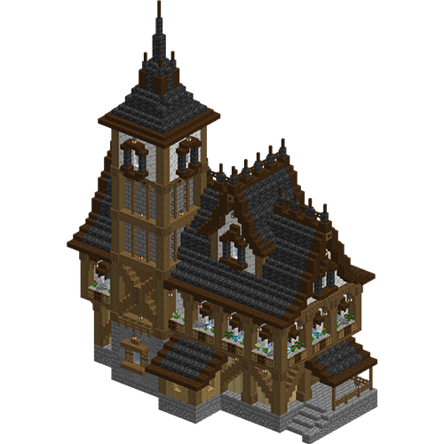
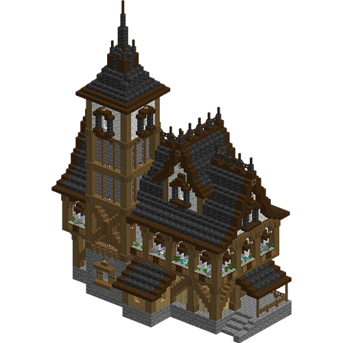

Bienvenue sur Structures Sphere
Un site de FloLeCrafteur


Un site de FloLeCrafteur
Structures Sphere met à votre disposition des structures Minecraft gratuitement, pour
vos mondes créatifs. Régulièrement, principalement mensuellement, Structures Sphere est mis à jour pour vous mettre à disposition
de nouvelles structures. Ce site ne me rapporte aucun fonds, et je m'occupe de faire les
Structures à la main, et je prend aussi le temps de regarder des structures dans des "tutos"
pour vous évitez de prendre longtemps à les reproduire. J'espère donc que Structures Sphere vous seras
utiles!
Ce site n'est en aucun cas affilié à Mojang Studios, et est donc pas officiel.
Pour installer une Structure sur un Monde Créatif, il faut faire une petite manipulation mais rien de
grave.
Après avoir télécharger la Structure, vous pourrez la retrouvée dans
"Téléchargements" dans votre Explorateur de Fichiers. Ensuite, vous allez faire "Touche Windows" + "R". Cela
va vous ouvrir un dossier avec plein d'autres dossiers, souvent commençant par un ".". Vous allez donc ouvrir
le dossier ".minecraft" et vous rendres ensuite dans le dossier "saves". Vous y retrouverez tous les mondes
que vous avez créer. Ensuite, vous allez tout simplement ouvrir le dossier du monde que vous désirez et vous
rendres dans le dossier "generated" pour ensuite ouvrir le seul dossier présent "minecraft". Vous ouvrirez
ensuite le dosseir "structures" qui est normalement le seul présent, et vous tomberez sur un dossier vide (ou pas
si vous aez enregistrés des structures sur votre monde). Vous pourrez ensuite déposer la structure que vous avez
téléchargé à l'intérieur. Mais ensuite, comment faire pour la mettre sur votre monde? Et bien vous allez juste
ouvrir le tchat en appuyant sur "t" et taper la commande suivant: "/give @a minecrft:structure_block". Cela vous
donneras normalement un bloc nommé "Bloc de Structure". Vous aurez besoin de le poser et de l'ouvrir.
Et, dans la case tout en haut, où vous pouvez écrire du texte, vous allez juste écrire le nom de la structure
que vous avez téléchargé, et vous aurez juste besoin d'appuyer sur "Charger" en bad à droite pour placer la Structure!
Donc, comme pour le monde créatif, vous aurez besoin de télécharger une structure. Ensuite, vous allez vous rendres sur Aternos et aller sur le serveur Minecraft de votre choix. Normalement, sur la droite de votre écran, il y a une barre latérale. Dans cette barre latérale, il y a une catégorie "Fichiers". Vous allez donc vous rendres dedans. Ensuite, vous aurez quelques fichiers et dossiers qui vont apparaîtres. Mais, le dossier qui nous intéresses et celui qui se nomme "world". Et maintenant que vous vous êtes rendus dans ce dossier, vous allez faire le même chemin que pour le monde solo donc "generated" - "minecraft" - "structures". Maintenant, vous cliquez sur "Envoyer" et vous faites "Fichiers". Maintenant, vous avez juste à ajouter la Structure téléchargée et à faire la même manipulation que le Monde Solo pour ajouter la Structure. Donc, vous faites la commande "/give @a minecraft:structure_block", vous le placez et vous l'ouvrez, et vous tapez ensuite le nom de la structure dans la case en haut de l'interface, et vous la charger en cliquant sur le bouton "Charger" en bas à droite de l'interface.
Structures Sphere n'est malheureusement pas disponible pour vous, utilisateurs d'appareils mobiles. Ce site est fait pour les PC, ayant la possibilité d'acheter Minecraft: Java Edition. Je mets à disposition des structures seulement pour Minecraft: Java Edition et vous, utilisateurs mobiles, possédez Minecraft: Pocket Edition, fonctionnant sous la version Bedrock de Minecraft. Vous ne pouvez donc pas utiliser ce site Internet.
 
